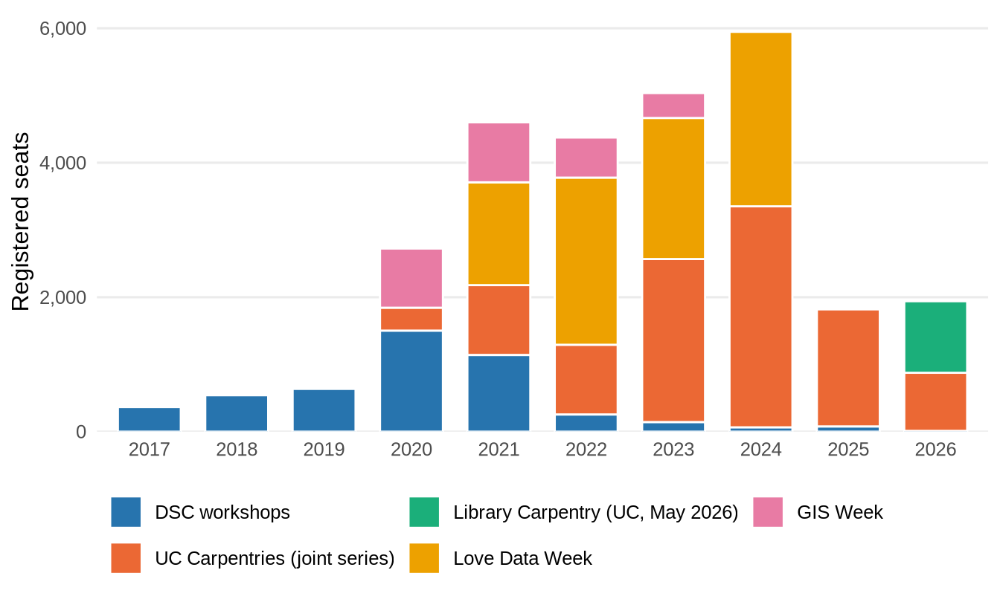
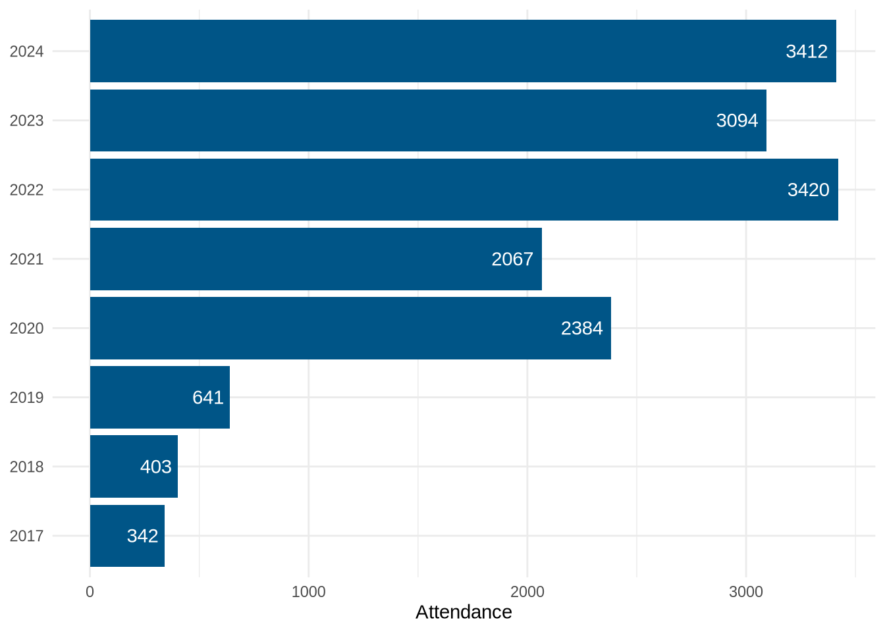
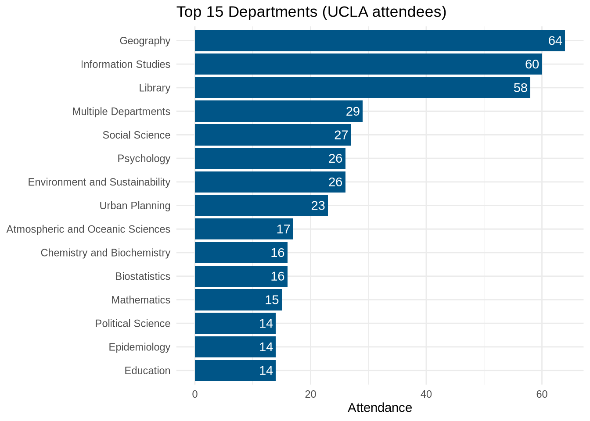
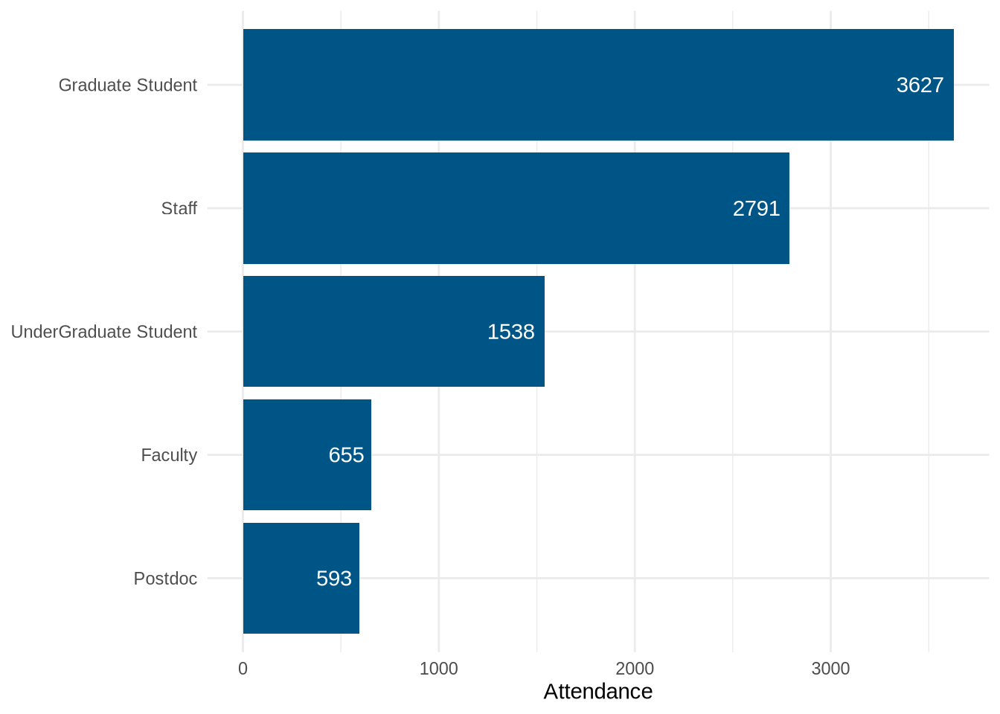

Instruction Statistics
For DSC staff and library administration: workshop attendance from attendee-level and validated aggregate sources.
Last rendered: September 27, 2026
NoteHeadline figures since 2017
DSC instruction is counted in registered seats: one registration for one session, not a unique person and not an attendance. The series runs from May 2017 through September 2026 (2026 is partial) and includes the UC-wide series DSC co-founded and co-delivers, so UCLA participants are a subset. DSC offered 819 workshop sessions from May 2017 through May 2026. This series replaces the earlier published figure of 17,466 attendee-events (May 2017 to April 2024); the sections after it cover DSC’s attendee-level file only.
Registered Seats by Program, 2017-2026
27,986
Registered seats, May 2017 to September 2026 (2026 partial)
Registrations, not unique people or attendance.
| Program | 2017 | 2018 | 2019 | 2020 | 2021 | 2022 | 2023 | 2024 | 2025 | 2026 | Total |
|---|---|---|---|---|---|---|---|---|---|---|---|
| DSC workshops | 366 | 542 | 636 | 1,501 | 1,139 | 254 | 141 | 63 | 76 | 9 | 4,727 |
| UC Carpentries (joint series) | 343 | 1,041 | 1,039 | 2,427 | 3,289 | 1,743 | 867 | 10,749 | |||
| GIS Week | 880 | 892 | 596 | 370 | 2,738 | ||||||
| Love Data Week | 1,529 | 2,486 | 2,098 | 2,595 | 8,708 | ||||||
| Library Carpentry (UC, May 2026) | 1,064 | 1,064 | |||||||||
| Total | 366 | 542 | 636 | 2,724 | 4,601 | 4,375 | 5,036 | 5,947 | 1,819 | 1,940 | 27,986 |
Attended seats are shown only where attendance was recorded for the same series and dates (Zoom at 30 minutes or more, or an attendance sheet). Coverage differs by series, so each ratio of attended to registered applies to its own row only, not to other series or to the total.
| Program | Year | Registered seats | Attended seats | Note |
|---|---|---|---|---|
| UC Carpentries (joint series) | 2023 | 2,427 | 524 | |
| UC Carpentries (joint series) | 2024 | 3,289 | 1,036 | Zoom rows at 30+ minutes; 1,027 after merging rejoins |
| UC Carpentries (joint series) | 2025 | 1,743 | 637 | |
| Library Carpentry (UC, May 2026) | 2026 | 1,064 | 428 | rejoins merged by name; 453 in the earlier published series |
| Love Data Week | 2021 | 1,529 | 655 | some sessions only |
NoteHow the seat series is counted
- Unit: registered seats, one per person per session signed up. One unit is used for each series: UC Carpentries and Library Carpentry count registered seats, Love Data Week counts registered seats (best effort), GIS Week counts registrations, and DSC-run workshops use the larger of a rebuild from named registration sources and the published aggregate, per year
- Window: May 2017 through September 2026. 2026 is partial because the Fall 2026 UC Carpentries series is in progress
- Why it differs from the earlier 17,466 (May 2017 to April 2024): earlier Carpentries figures counted attended seats or people, not registered seats; the window now runs through 2026; and Love Data Week 2021 is counted on the same UC-wide basis as 2022-2024 (1,529 registered seats, where the earlier series counted 177 from DSC-hosted sessions only)
- Open items: Library Carpentry May 2026 attended is 428 here (rejoins merged by name) against 453 in the earlier series; UC Carpentries September 2024 attended is 1,036 Zoom rows at 30 minutes or more, 1,027 after merging rejoins. Named sources for general DSC workshops in 2017-2019 are incomplete, so those years use the published aggregate where it is larger
- Aggregates only: row-level registration and attendance data stay outside this repository
At a Glance: Attendee-Level File (2017–2024)
Total Attendance Records 15,765 Attendee-level file only; see headline figures above · ↑ +10% · 3,412 in 2024 vs 3,094 in 2023
UCLA-Affiliated 1,575 institution == “UCLA”
UCLA-Held 4,350 Attendee-events, May 2017–Apr 2024: UCLA-affiliated, plus unknown-affiliation records from 2017–2020 sessions held at UCLA
Years with Data 8 Distinct calendar years
UCLA Affiliation Unknown 5,722 Included in totals; excluded from affiliation, department, and school metrics
UCLA Organizational Parent Known 838 53.2% of validated UCLA attendance
Workshop Attendance
Attendee-level records only, May 2017 to September 2024 (2024 is partial). This is a different series from the registered-seat chart above.

| Series | Year | Attendance |
|---|---|---|
| GIS Week | 2020 | 883 |
| GIS Week | 2021 | 892 |
| GIS Week | 2022 | 596 |
| GIS Week | 2023 | 370 |
| Love Data Week | 2019 | 5 |
| Love Data Week | 2022 | 2585 |
| Love Data Week | 2023 | 2182 |
| Love Data Week | 2024 | 2413 |


See also: Consulting one-on-one consultations · Infrastructure Dataverse and AWS metrics · About & methodology
NoteData notes
- Sources: Consolidated workshop attendee records (including UC-wide GIS Week and Love Data Week) and privacy-safe aggregate workshop summaries
- Unit: Attendance instances. LibInsight uses one attendee-event row; aggregate sources provide a validated count for each event. A person attending three workshops contributes three attendance instances
- UCLA attendees: filtered on
institution == "UCLA". Records with unknown institution remain in overall/year/topic totals but are excluded from UCLA, department, and school metrics - UCLA-held: UCLA-affiliated records plus records with unknown institution from 2017–2020 sessions classified as held at UCLA (
data/reference/instruction/session_venue_2017_2020.tsv, reviewed by the DSC director, 2026-09). Institution was not collected before 2020, so the UCLA-affiliated figure reads zero for 2017–2019 although that teaching was on campus. A UCLA-held session can include a few outside attendees. Sessions classified as mixed (co-hosted or UC-wide) or held elsewhere are excluded. This metric does not feed department or school counts - Department:
standardized_departmentfield, mapped from raw free-text entries; unmapped values appear as-is - Organizational parent: versioned mapping from validated UCLA departments to College divisions, professional schools, the Library, UCLA Health, institutes, or administrative groups. Missing and unresolved departments remain unknown
- School/division: not inferred when the source lacks a validated department. Unknown is never treated as non-UCLA
- UC-wide series: GIS Week and Love Data Week are included from the consolidated attendee source; their upstream workbooks are retained as provenance and are not added again
- Registered seats (headline): a separate reconciled series from
data/processed/canonical/instruction_seats_by_program_year.csv, counted as described under “How the seat series is counted”. It is not the sum of the attendee-level tables on this page - Small cells: department, organizational-parent, and affiliation breakdowns fold any unit with fewer than 5 into one combined row, which is omitted if it is also under 5
- Full rules: Metrics Governance · About & methodology
| Source | Record type | Rows | Attendance | Date range |
|---|---|---|---|---|
| Consolidated instruction | attendee_event | 14,828 | 14,828 | 2017-05-04 – 2024-04-19 |
| Zoom | event_summary | 9 | 937 | 2024-09-09 – 2024-09-20 |
NoteCite this page
UCLA Library Data Science Center. (2026). Instruction Statistics. Retrieved from https://ucla-data-science-center.github.io/dsc-stats-reports/instruction.html
Last rendered: September 27, 2026